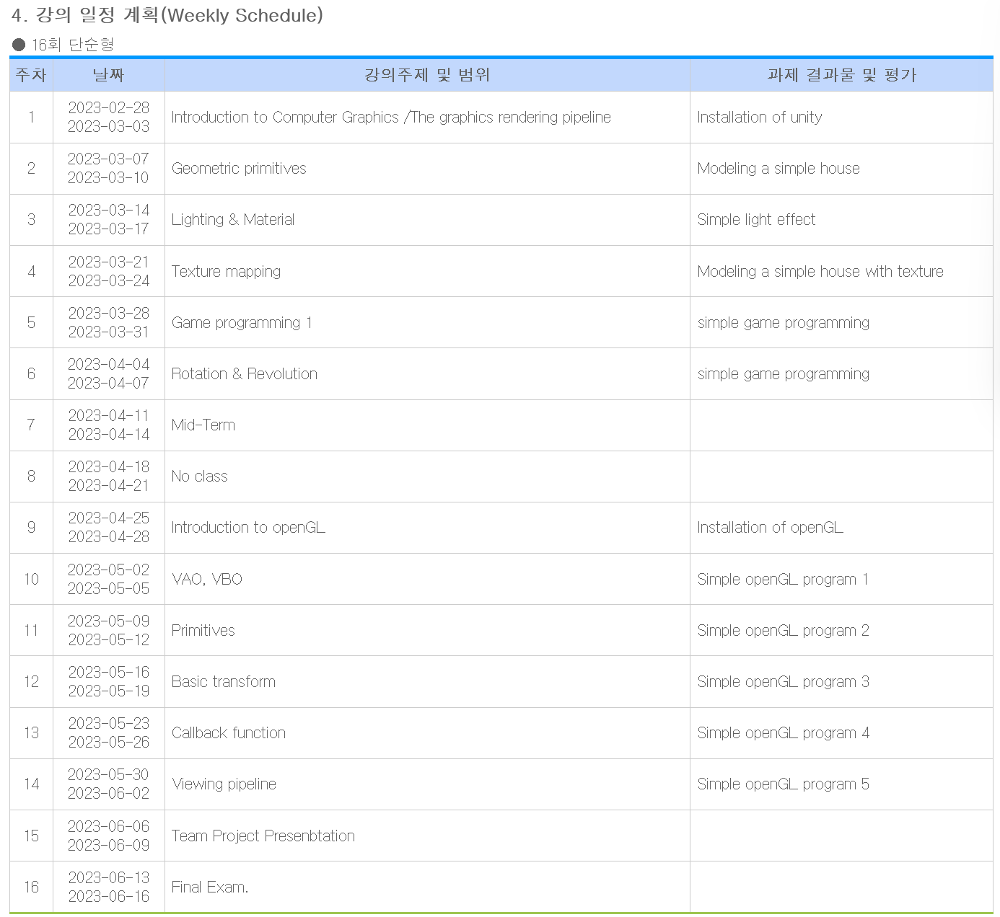

Computer Graphics

Some Questions
-
요즘 AI가 엄청 뜨고 있고 효과가 정말 좋은 것 같다
- Example을 들어야 할 거 같은데
- 기존 알고리즘 vs AI
-
근데 여기서 AI가 점점 더 발전하게 되면 기존의 방법들은 무용지물이 되는게 아닌가 하는 생각이 드는데 교수님은 어떻게 생각하십니까?
- AI를 학습하는 과정에서 기존의 알고리즘들이 사용 되는건가?
- AI를 돌릴 수 없는 소형 low-power 임베디드 시스템
- AI를 저전력으로 임베디드에서 돌릴 수 있는 기술(하드웨어 & 소프트웨어)들도 많이 발전하고 있다
-
최신 컴퓨터 그래픽 기술 동향과 발전 방향의 이해
-
상담의 목적 by ChatGPT
- 진로에 대한 조언
- 학업에 대한 요청
- 전문 지식 습득을 위한 질문
- 기타 문제 해결을 위한 상담